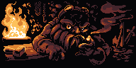
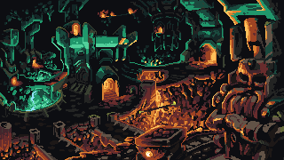
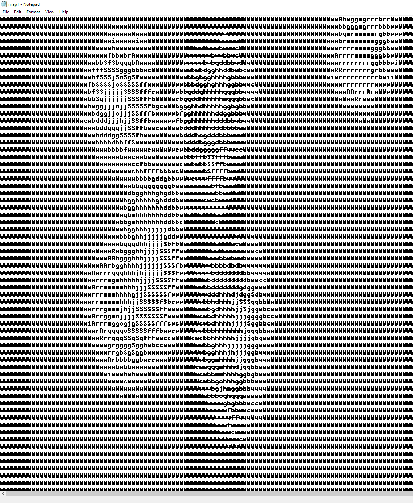
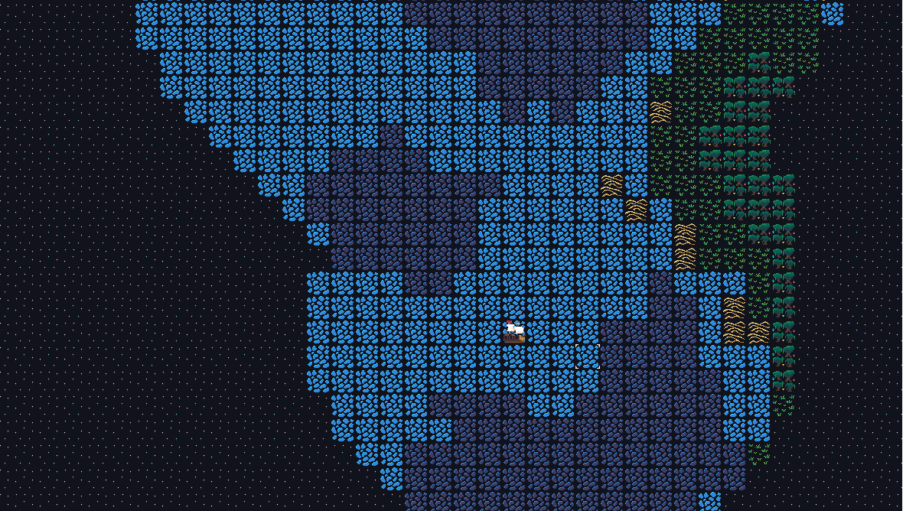

30 October 2022
I have always loved procedurally generated games, they scratch an itch no other games can. Exploring a world no other human has ever seen before is a uniquely novel experience.

Random generation provides a certain magic, the melons you just stumbled across in Minecraft may as well have been put there by god himself.
In Dwarf Fortress that underground cavern full of mushroom trees and exotic creatures might be 2 blocks below you or 200.

Having it be impossible to know what you will stumble across in these games makes them a unique experience every time you play them. Perhaps linear games with a carefully curated experience provide a more polished experience, but that comes at the cost of the player's sense of free will and agency.
Anyhow, I became curious in the alchemy of world generation. After watching dozens of YouTube videos and reading a few blogs I was finally able to wrap my brain around the concept of height maps and randomized smoothing. After a few failed attempts and some iteration I was able to write a Python script that was outputting something that resembled islands to a .txt file.

The next step was to get this raw data to the display in a meaningful way. After drawing some 32x32 pixel tiles and several hours of research I was able to scrape together this.
